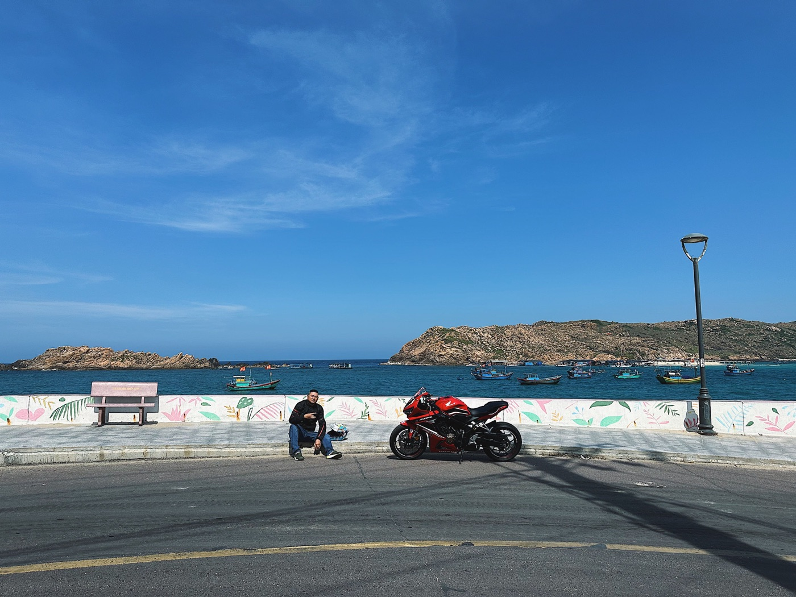

Как ухаживать за байком у моря в Нячанге

Море делает поездки красивее, но солёный воздух, влажность и песок ускоряют коррозию крепежа и электрических контактов. Байку в Нячанге не нужна ежедневная глубокая мойка — важнее регулярно смывать загрязнения, сушить технику и быстро замечать первые изменения.
Где появляется проблема
Сначала осматривай болты, подножки, пружины, края тормозных дисков, соединения выхлопа и места со сколами краски. Под сиденьем и в багажнике влага держится дольше, чем кажется. Белый или зелёный налёт у контактов, рыжие точки и тугие шарниры — повод не откладывать обслуживание.
После дождя и поездки по мокрой дороге
Когда байк остынет, смой пресной водой грязь и соляной налёт с колёс, нижней части пластика и подножек. Не направляй сильную струю прямо в замок зажигания, приборную панель, воздухозаборник, электрику, подшипники и выхлоп. После мойки протри доступные поверхности и дай технике просохнуть в проветриваемом месте.
Как правильно парковать
Постоянная стоянка прямо на первой линии получает больше солёного аэрозоля. Если есть выбор, ставь байк под крышей, но с движением воздуха и подальше от прямых брызг. Чехол должен быть сухим и дышащим. Плотно накрытый мокрый скутер сохраняет конденсат и создаёт лучшие условия для коррозии.
Пластик, металл и сиденье
- используй мягкую губку и средство, подходящее для мототехники;
- не три песок сухой тряпкой — он оставляет царапины;
- не наноси скользящие составы на шины, тормоза, ручки и сиденье;
- сколы краски на металлических деталях показывай мастеру;
- после мойки проверь тормоза на малой скорости.
Защитные составы для металла и контактов применяют точечно и по назначению. Универсальная аэрозольная смазка рядом с тормозным диском опасна: даже небольшой след ухудшает торможение.
Электрика и замки
Если ключ стал поворачиваться хуже, сигнал работает нестабильно или поворотник мигает после дождя, не заливай всё подряд маслом. Сначала просуши байк и попроси проверить разъёмы и уплотнения. Подходящий состав для контактов выбирают с учётом материала и места применения.
Еженедельный быстрый осмотр
- Проверь шины и тормозные поверхности.
- Посмотри на крепёж, подножки и выхлоп.
- Открой багажник и убери влагу.
- Проверь свет, сигнал и оба поворотника.
- Убедись, что новые рыжие точки не увеличиваются.
Когда нужен сервис
Обращайся к мастеру, если коррозия появилась на тормозах, креплении колеса, руле, раме или электропроводке; если после мойки двигатель работает иначе; если разъёмы греются или свет пропадает. Косметический налёт и проблема несущей детали — разные вещи, поэтому важна профессиональная оценка.
Короткий вывод
В морском климате работает простая система: пресная вода после сильного загрязнения, аккуратная сушка, проветриваемая парковка и регулярный осмотр. Для общего графика обслуживания читай как ухаживать за байком, а перед каждым выездом используй короткий чек-лист.